← Documentação DDDEvent Storming: ordem de serviço
Criação, orçamento, execução, entrega e acompanhamento da OS, incluindo os principais caminhos alternativos.
Use os diagramas abaixo para acompanhar o fluxo. Baixar arquivo Excalidraw editável
Fluxo principal
F1 Identificação, cliente e veículo · Ampliar diagramaF2 Criação da ordem de serviço · Ampliar diagrama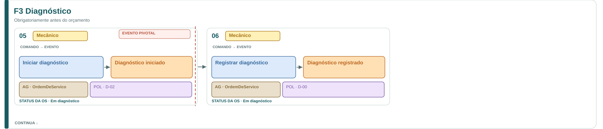
F3 Diagnóstico · Ampliar diagrama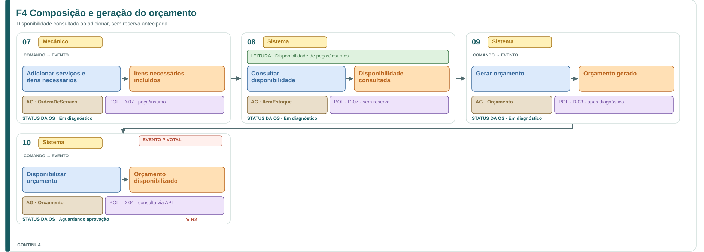
F4 Composição e geração do orçamento · Ampliar diagrama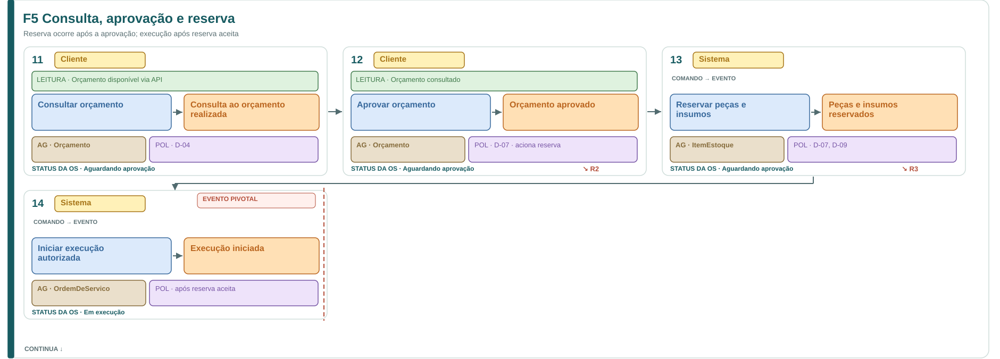
F5 Consulta, aprovação e reserva · Ampliar diagrama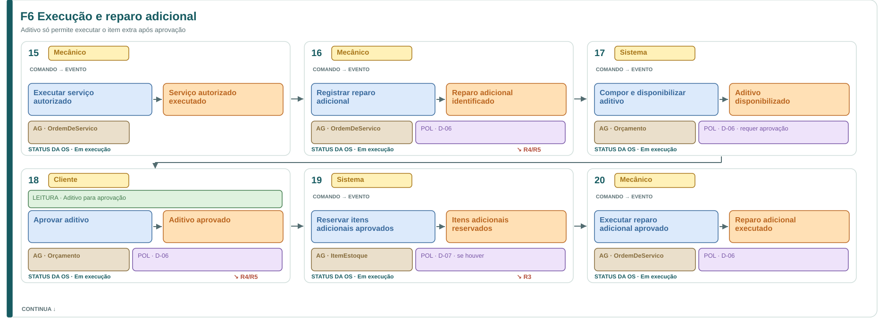
F6 Execução e reparo adicional · Ampliar diagrama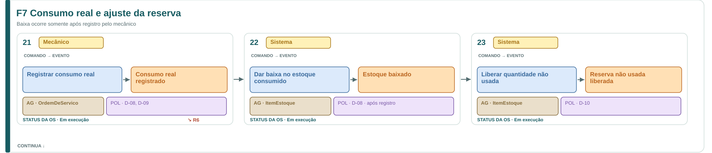
F7 Consumo real e ajuste da reserva · Ampliar diagrama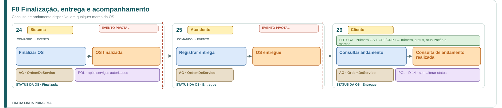
F8 Finalização, entrega e acompanhamento · Ampliar diagramaVariações e exceções (7 diagramas)
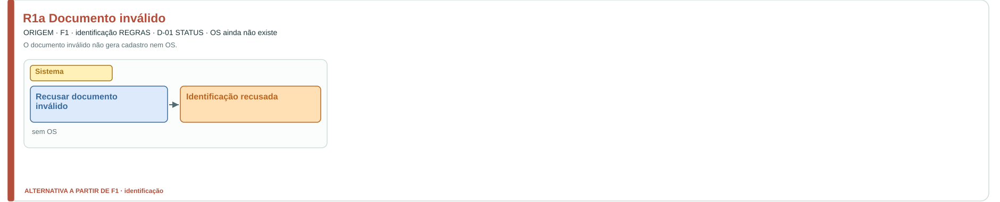
R1a Documento inválido · Ampliar diagramaR1b Cliente válido não encontrado · Ampliar diagrama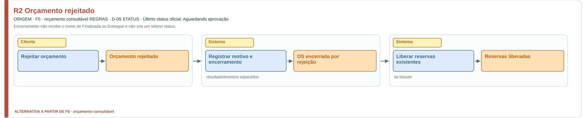
R2 Orçamento rejeitado · Ampliar diagrama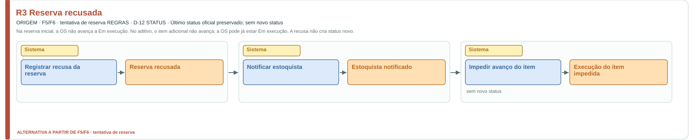
R3 Reserva recusada · Ampliar diagrama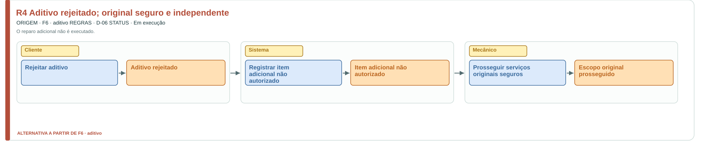
R4 Aditivo rejeitado; original seguro e independente · Ampliar diagrama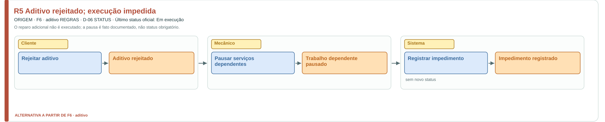
R5 Aditivo rejeitado; execução impedida · Ampliar diagrama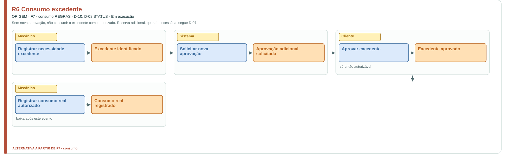
R6 Consumo excedente · Ampliar diagrama